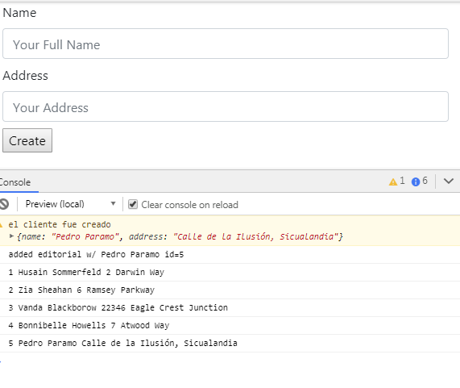
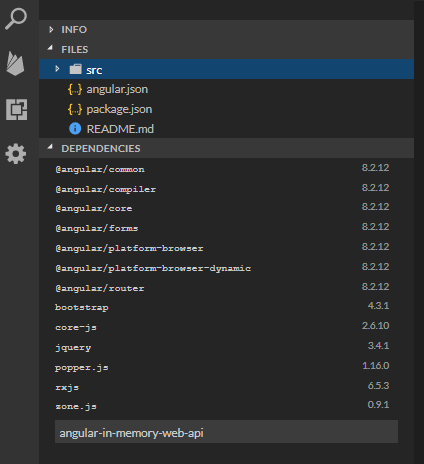
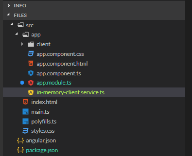
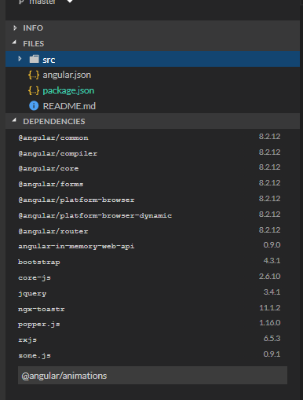
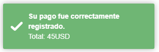
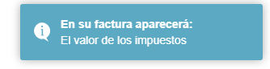
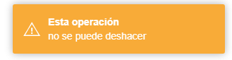
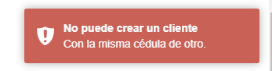

Este tutorial es una extensión del tutorial Crear un Formulario en Angular y le agrega al ejercicio del formulario dos elementos:
api-in-memory que permite utilizar todos los métodos http (get, post, put, delete) sin necesidad de conectarse a una aplicación back.ngx-toastr que permite crear mensajes de retroalimentación al usuario. El código del ejemplo aquí
El resultado del tutorial es una aplicación que tiene el formulario básico del tutorial anterior, la implementación de los servicios usando http y el uso de la librería ngx-toastr para los mensajes.

angular-in-memory-web-api
iSi está por fuera de stackblitz, debe ejecutar el comando:
npm i angular-in-memory-web-api
Cree un servicio, a nivel de app, que se llame (xyz es el nombre de su aplicación): in-memory-xyz
En nuestro ejemplo xyz es client

El servicio debe implementar InMemoryDbService que declara el método createDB. este método define los datos que no es otra cosa que un arreglo de objetos, así:
import { InMemoryDbService } from "angular-in-memory-web-api";
export class InMemoryClientService implements InMemoryDbService {
createDb() {
let clientes = [
{
id: 1,
name: "Husain Sommerfeld",
address: "2 Darwin Way"
},
{
id: 2,
name: "Zia Sheahan",
address: "6 Ramsey Parkway"
},
{
id: 3,
name: "Vanda Blackborow",
address: "22346 Eagle Crest Junction"
},
{
id: 4,
name: "Bonnibelle Howells",
address: "7 Atwood Way"
}
];
return { clientes };
}
}Utilizando el Angular Generator cree, en el módulo client un servicio y llámelo xyz (en nuestro ejemplo client). El generador completa el nombre y el archivo queda: client.service.ts
Abra el archivo que creó y note que el servicio es una clase typescript. Esta clase contendrá la lógica del componente, es decir, los métodos para traer los valores (GET), crear valores (POST), etc. Estos métodos los vamos a implementar utilizando una librería de angular llamada HttpClient:
En la clase del servicio definimos:
import { Injectable } from "@angular/core";
import { HttpClient, HttpHeaders } from "@angular/common/http";
import { Observable, of } from "rxjs";
import { catchError, map, tap } from "rxjs/operators";
import { Client } from "./client";
@Injectable({ providedIn: "root" })
export class ClientService {
private clientesUrl = "api/clientes"; // URL to web api
httpOptions = {
headers: new HttpHeaders({ "Content-Type": "application/json" })
};
constructor(private http: HttpClient) {}
/** GET clientes from the server */
getClientes(): Observable<Client[]> {
return this.http.get<Client[]>(this.clientesUrl);
}
/** GET client by id. Will 404 if id not found */
getClient(id: number): Observable<Client> {
const url = `${this.clientesUrl}/${id}`;
return this.http.get<Client>(url);
}
/** POST: add a new client to the server */
createClient(client: Client): Observable<Client> {
return this.http.post<Client>(this.clientesUrl, client, this.httpOptions).pipe(tap((client: Client) => console.log(`added editorial w/ ${client.name} id=${client.id}`)));
}
/** DELETE: delete the client from the server */
deleteClient(client: Client | number): Observable<Client> {
const id = typeof client === "number" ? client : client.id;
const url = `${this.clientesUrl}/${id}`;
return this.http.delete<Client>(url, this.httpOptions);
}
/** PUT: update the client on the server */
updateClient(client: Client): Observable<any> {
return this.http.put(this.clientesUrl, client, this.httpOptions);
}
}Paso 3: Invocar los métodos del servicio desde el componente
En el componente se definen los métodos que serán llamadas desde la vista (el html) y a la creación del componente para inicializar datos. Estos métodos, generalmente lo que hacen es invocar los métodos definidos en la clase servicio del componente.
getClients()El componente debe definir un método getClients()para traer la lista de todos los clientes. Este método se implementa de la siguiente forma:
getClients(): void {
this.clientService.getClients().subscribe(clients => this.clients = clients);
}El método se debe llamar a la creación del componente. Para esto, la clase del componente debe implementar una interface OnInit que define un método de inicialización ngInit.
createClient(newClient: Client)El componente debe definir el método que va a crear un nuevo cliente y que será invocado desde el formulario cuando el usuario haga submit.
El método recibe el objeto del nuevo cliente e invoca el servicio:
createClient(newClient: Client) {
// Process checkout data here
console.warn("el cliente fue creado", newClient);
this.clientService.createClient(newClient).subscribe(client => {
this.clientes.push(client);
});
this.clientForm.reset();
}
El código completo es:
import { Component, OnInit } from "@angular/core";
import { FormBuilder, FormGroup, Validators } from "@angular/forms";
import { Client } from "../client";
import { ClientService } from "../client.service";
@Component({
selector: "app-client-create",
templateUrl: "./client-create.component.html",
styleUrls: ["./client-create.component.css"]
})
export class ClientCreateComponent implements OnInit {
clientForm: FormGroup;
clientes: Client[];
constructor(
private clientService: ClientService,
private formBuilder: FormBuilder
) {
this.clientForm = this.formBuilder.group({
name: ["", [Validators.required, Validators.minLength(2)]],
address: ["", Validators.required]
});
}
createClient(newClient: Client) {
// Process checkout data here
console.warn("el cliente fue creado", newClient);
this.clientService.createClient(newClient).subscribe(client => {
this.clientes.push(client);
});
this.clientForm.reset();
}
ngOnInit() {
this.clientService
.getClientes()
.subscribe(clientes => (this.clientes = clientes));
}
}
Toastr es una librería para crear mensajes de notificación o alerta al usuario final. Un demo de las cosas que se pueden hacer con esto puede ser vista aquí.
ngx-toastr es la implementación para ser utilizada desde aplicaciones angular. La documentación completa de la librería la puede encontrar aquí.
Los pasos generales son:
ngx-toastr y la librería @angular/animationsangular.json los estilos del toastrLibrería del ngx-toastr:

angular.json los estilos del toastrEn el archivo angular.json vaya a "styles" y agregue:
"styles": [
"styles.scss",
"node_modules/ngx-toastr/toastr.css"]
En el módulo principal de la aplicación se debe importar las dos librerías que se instalaron BrowserAnimationsModule y ToastrModule:
import { CommonModule } from '@angular/common';
import { BrowserAnimationsModule } from '@angular/platform-browser/animations';
import { ToastrModule } from 'ngx-toastr';
@NgModule({
imports: [
CommonModule,
BrowserAnimationsModule, // required animations module
ToastrModule.forRoot() // ToastrModule added. Aquí se realiza la configuración
],
bootstrap: [App],
declarations: [App]
})
class MainModule {}En cada clase componente donde se va a utilizar el toastr, se debe incluir el servicio ToastrService y se debe inyectar en el constructor del componente para poder utilizarlo.
import { ToastrService } from 'ngx-toastr';
@Component({...})
export class YourComponent {
constructor(private toastr: ToastrService) {}
...
}Los métodos que se pueden llamar sobre el servicio toastr son:
Success |  |
Info |  |
Warning |  |
Error |  |
Note que en cada caso, el ícono y el color del mensaje cambian. De forma general, los argumentos que reciben estos métodos son:
success, error, info, warning (message, title, ToastConfig)Dónde title es la frase de arriba, message la segunda frase y ToastConfig es un objeto json donde se puede configurar, entre otras cosas: el tiempo durante el cual se va a mostrar el mensaje, la posición en la pantalla, etc. Por ejemplo:
showSuccess() {
this.toastr.success("Cliente", "Creado exitosamente!", {"progressBar": true,timeOut:3000});
}La documentación completa de todas las opciones la encuentra aquí.